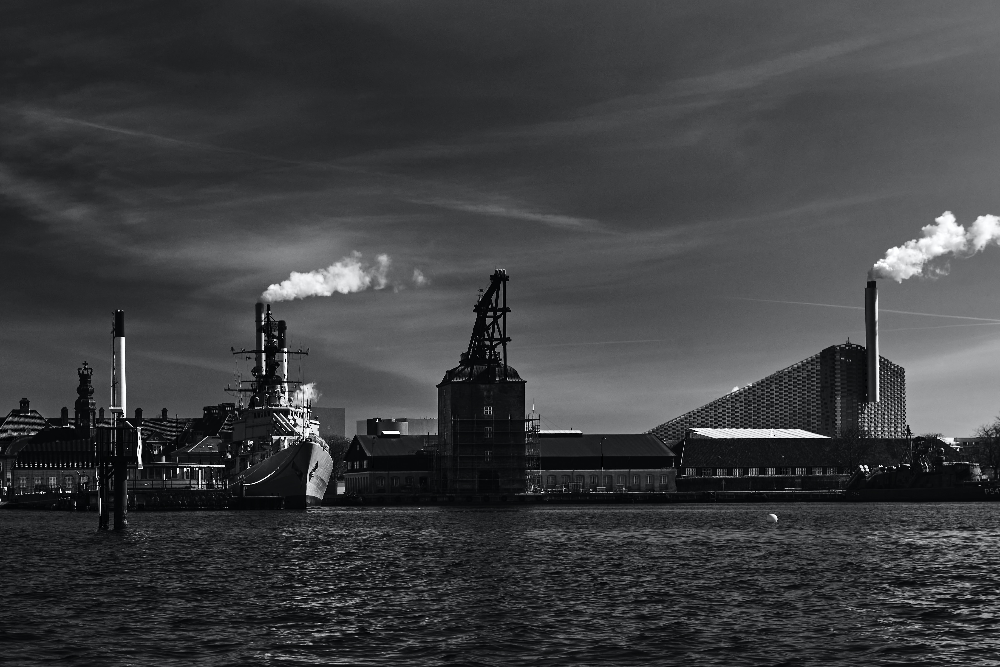
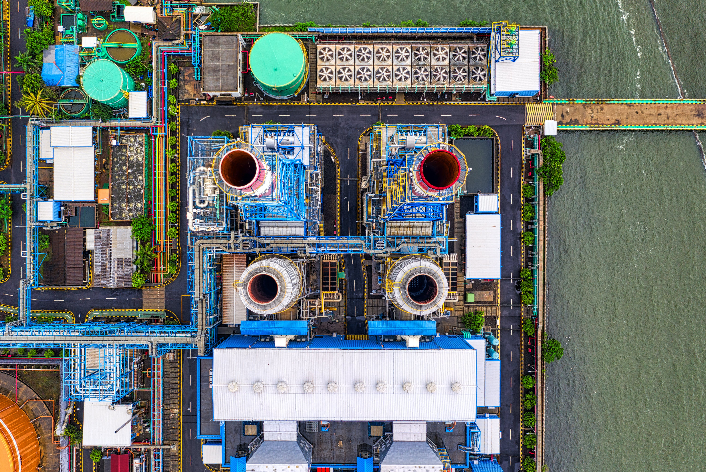

WaterRecycle is leading the way in the reuse of laundry water and energy that would otherwise be wasted.
Reduce Water Cost by 80%
Water and energy costs in a laundry operation continue to spiral out of control. With an WaterRecycle Laundry Wash Water Recycling System, you can reduce water usage by 80%, eliminate 90% of wastewater discharge, while cutting energy costs by 50% or more.

What Our Customers Say
Our laundry water recycling systems work great, our customers save millions, and we can brag about our 97% operational report card with savings and performance results to back it up. So, when its time to look at water recycling, don’t just contact us, ask our customers about WaterRecycle’s REPUTATION.

Introducing WaterTrakx™
WaterTrakx by WaterRecycle is the most innovative Water Monitoring System in the world today. WaterTrakx is a completely wireless, non-evasive water tracking and testing system that meters all water lines desired within a property or facility. The system uses set parameters to monitor daily water flow and indicate changes in water usage or quality.